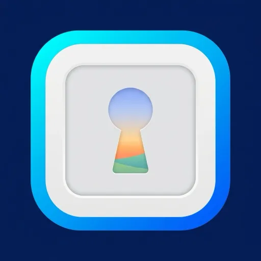
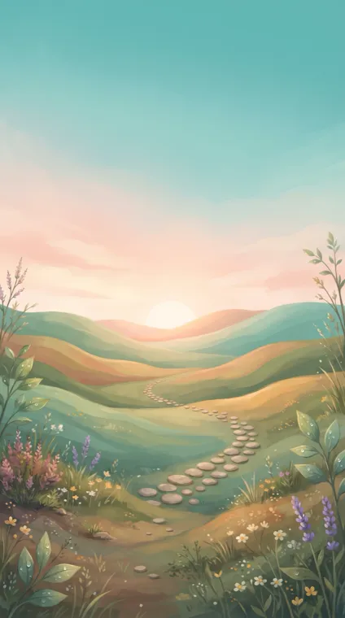

En corto: Claude no puede hacer una foto ni una ilustración por sí solo; lo dice el centro de ayuda de Anthropic (Can Claude produce images?). Puede dibujar diagramas y gráficos con código, y puede pedirle una imagen a un servicio a través de un conector. Esta página usa el conector de Dora, porque lo hemos comprobado y podemos enseñar lo que hizo. El modelo de imagen por defecto, Nano Banana 2, cuesta 10 monedas por imagen, entre 0,10 y 0,20 $, que se pagan con monedas de Dora, no con tu plan de Claude.
Tres formas de sacar una imagen de Claude
| Forma | Qué obtienes | Sirve para |
|---|---|---|
| Un conector de imágenes | Una imagen de verdad (tipo foto o ilustración) que se ve en el chat | Ilustraciones, fotos de producto, iconos, fondos, retocar tu foto |
| Claude dibuja con código | SVG o HTML: diagramas, gráficos, formas sencillas | Diagramas, gráficos, dibujos planos que puedes editar |
| Claude escribe el prompt | Un texto que pegas en otra herramienta de imágenes | Si ya usas otra herramienta de imágenes |
Antes de empezar
- Un plan de Claude con conectores propios. Anthropic cita Free, Pro, Max, Ultra, Team y Enterprise; en Free, uno solo (Claude Help Center).
- Una cuenta de Dora con monedas. Puedes crearla cuando Claude te pida entrar. Las monedas vienen de un plan o de un paquete (precios).
Paso a paso
- Abre el formulario del conector. En Claude, ve a Customize, luego Connectors, pulsa + Add y elige Add custom connector. El botón de la página de Dora para Claude abre el mismo formulario y copia la dirección.
- Pega la dirección. Ponle de nombre Dora, pega https://doravideo.com/mcp, pulsa Continue, deja los ajustes de acceso como están y pulsa Add.
- Entra en tu cuenta. Entra en Dora con Apple, Google o correo. Si ya usas Dora, con la misma cuenta.
- Actívalo en un chat. En un chat, pulsa +, abre Connectors y comprueba que Dora está activado.
- Pide la imagen. Descríbela con palabras normales y di la forma (cuadrada, vertical u horizontal). Añade «dime antes lo que cuesta y espera a que lo confirme» si quieres aprobarlo antes.
En los planes Team y Enterprise, un Owner añade el conector para la organización y cada miembro lo conecta. Todos los pasos, con un botón que abre el formulario: Dora para Claude; otros asistentes: conectores de Dora.
Qué pedir
- Di para qué es. «Un icono de app», «un fondo para una captura del App Store con sitio para un titular arriba», «una foto de producto desde arriba». El uso decide la forma y el espacio vacío.
- Di la forma. Cuadrada para iconos y publicaciones, vertical 9:16 para historias y pantallas de móvil, horizontal para cabeceras de web.
- Di lo que no quieres. «Sin texto, sin logos, sin personas» evita letras sueltas y marcas.
- Pocos detalles. En el prompt más largo de abajo se perdieron tres detalles pequeños.
- Si partes de tu foto: dale a Claude un enlace https público. La guía de Dora probó enlaces; adjuntar la foto al chat no se probó.
Cuatro imágenes hechas así, con el prompt exacto
Salieron del conector de Dora usado desde Claude, entre junio y octubre de 2026, y están guardadas en los registros de Dora con su prompt y su coste. Ninguna se hizo para esta página. Las elegimos para enseñar usos distintos, incluida una en la que el modelo no hizo parte de lo que se pedía.

Prompt exacto (en inglés, tal cual):
iOS app icon, flat vector, minimal, centered, no text, no letters. A single rounded photo frame shape with a keyhole cut out of its center, the keyhole revealing a soft gradient of a landscape behind it. Deep navy background with a bright cyan and blue gradient inside the photo shape. Clean geometric, high contrast, unmistakable at 60 pixels, Apple App Store icon style, square, no rounded corner mask.

Prompt exacto (en inglés, tal cual):
Vertical background illustration for an App Store screenshot of a calm meditation app about building a daily habit, soft painterly premium style like Calm/Headspace: a gentle sunrise over soft rolling hills with a winding stone path made of small round stepping stones, a few small flowers, soft peach and warm light blending into teal and aqua (#7FD3C9). The TOP 35% is an almost empty pale sunrise sky reserved for a headline. The center is calm and low-detail (a phone mockup goes on top); detail on the edges and the bottom. No text, no letters, no logos, no phone, no people.
Prompt exacto (en inglés, tal cual):
Aesthetic vertical flatlay shot from directly above, luxury beauty vanity on white marble: elegant unbranded skincare bottles, a gold compact, a crystal perfume, pearl earrings, fresh peonies and a silk ribbon, soft morning window light, gold accents, clean rich beauty aesthetic, subtle film grain, editorial. No text, no watermark, no logos.
Prompt exacto (en inglés, tal cual):
Extreme close-up macro insert of a hand holding a sharpened goose-quill writing Latin court records on aged cream parchment by candlelight. The parchment shows gothic Latin script in dark brown ink, and in the lower-right margin a tiny faint pencil-and-ink sketch of a pig is visible. Beside the parchment on the wooden writing desk: a small clay inkwell with dark ink, a red wax seal stamp, a few loose quills. Warm candle glow from the upper left, a single candle flame visible at the edge of frame creating soft golden light, shallow depth of field with the script in sharp focus. Photorealistic, cinematic, 35mm macro lens, vertical 9:16, no anachronisms, no modern objects.
Cuánto cuesta
| Modelo de imagen del conector de Dora | Monedas | Notas |
|---|---|---|
| Z-Image | 1 | El más barato, solo desde texto |
| Nano Banana | 4 | También retoca una foto de referencia, al mismo precio |
| GPT Image 2 | 6 | El modelo de imagen de OpenAI |
| Nano Banana 2 | 10 | El de por defecto; admite una foto de referencia; más a más resolución |
| Nano Banana Pro | 18 | El que mejor conserva una cara de la foto; 24 en 4K |
Una moneda sale por unos 0,01 $ en el plan semanal de Dora y unos 0,02 $ en el anual (precios, 2 de noviembre de 2026), así que una imagen por defecto cuesta entre 0,10 y 0,20 $. Las cuatro imágenes de arriba se cobraron a 8 monedas cada una, el precio de antes del 2 de noviembre. Sin monedas no se genera ni se cobra nada; si una generación falla, las monedas vuelven. Para los mismos costes en ChatGPT, mira cuánto cuesta generar un vídeo con ChatGPT.
Sin conector
Que Claude lo dibuje con código
Claude puede hacer diagramas, gráficos y visuales interactivos en HTML y SVG dentro del chat, y cambiarlos cuando se lo pides (en beta en Claude web y escritorio, según Anthropic). Pide «un SVG de…» cuando quieras un diagrama de flujo, un gráfico, la forma de un logo sencillo o una ilustración plana que puedas editar. No parecerá una foto.
Que Claude escriba el prompt
Describe la imagen y pídele a Claude un prompt detallado para la herramienta de imágenes que ya uses, con la forma, la luz, lo que no debe salir y dónde dejar espacio vacío. Luego pégalo allí. Los precios son los de esa herramienta.
También vídeos
El mismo conector hace vídeos; llegan como un enlace, no dentro del chat. El modelo de vídeo por defecto es Seedance 2 Mini. Pasos, pruebas reales y costes, en inglés: how to make videos in Claude. En el iPhone, la misma cuenta y las mismas monedas sirven en la app de Dora.
Fuentes
- Claude Help Center, Can Claude produce images? y Custom visuals in chat, comprobados el 2 de noviembre de 2026.
- Claude Help Center, Get started with custom connectors using remote MCP, comprobado el 2 de noviembre de 2026.
- Dora para Claude, precios de Dora y la lista de modelos del conector de Dora, leídos el 2 de noviembre de 2026.
- Registros de generación de Dora de las cuatro imágenes: modelo, ajustes, monedas y prompt.
Aviso: Saga Labs, que publica esta web, hace Dora. Las cuatro imágenes se hicieron con Dora; los costes son de Dora, leídos el 2 de noviembre de 2026.
Preguntas frecuentes
¿Claude puede crear imágenes?
Por sí solo, no: el centro de ayuda de Anthropic dice que Claude no genera fotos ni ilustraciones como las herramientas de imágenes. Puede dibujar diagramas y gráficos en HTML y SVG, y con un conector de imágenes como Dora puede pedirle la imagen a un servicio y enseñarla en el chat.
¿Claude tiene un generador de imágenes?
No viene incluido. Se añade como conector en Customize, Connectors, Add custom connector. Con Dora, la dirección es https://doravideo.com/mcp.
¿Cuánto cuesta una imagen en Claude?
Tu plan de Claude no la paga. Con Dora, el modelo de imagen por defecto, Nano Banana 2, cuesta 10 monedas, entre 0,10 y 0,20 $; el más barato, 1 moneda.
¿Funciona con el plan gratis de Claude?
Anthropic incluye los conectores propios en Free, con uno solo. Necesitas igualmente monedas en tu cuenta de Dora.
¿Claude puede hacer un SVG?
Sí. Pídele un SVG y Claude lo escribe en el chat; sirve para diagramas, gráficos, iconos y formas planas, no para fotos.
¿Puedo retocar una foto mía?
Dale a Claude un enlace https público a la foto y di qué cambiar. La guía de Dora probó enlaces; adjuntar la foto al chat no se probó.